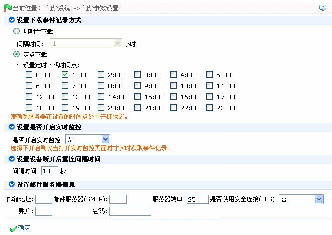
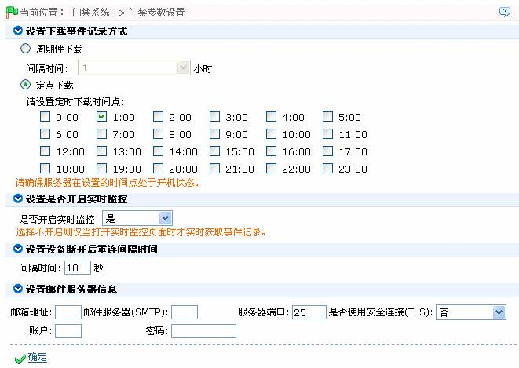

6.8 门禁参数设置
根据需要设置门禁参数，其中包括：设置下载事件记录方式、设置是否开启实时监控、设置设备断开后的重连间隔时间和设置邮件服务器信息。
1、单击【门禁】 【门禁参数设置】，进入门禁参数设置页面：
【门禁参数设置】，进入门禁参数设置页面：

2、根据需要设置各参数，设置完成后，单击【确定】按钮保存修改后的参数。
根据需要设置门禁参数，其中包括：设置下载事件记录方式、设置是否开启实时监控、设置设备断开后的重连间隔时间和设置邮件服务器信息。
1、单击【门禁】 【门禁参数设置】，进入门禁参数设置页面：
【门禁参数设置】，进入门禁参数设置页面：

2、根据需要设置各参数，设置完成后，单击【确定】按钮保存修改后的参数。